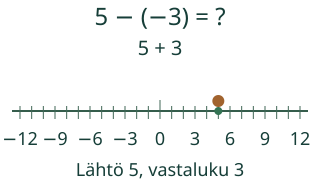
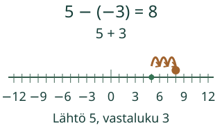
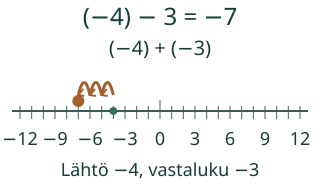
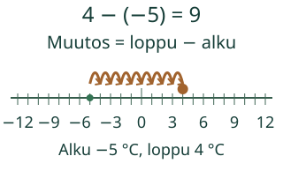

<link rel="stylesheet" href="lesson.css">
<section class="b16" data-b16-sub>


<section data-teaching-step="1" data-lesson-role="teaching-step">
<div class="intro"><p>Aava kysyy: miksi luvun −3 vähentäminen luvusta 5 vie oikealle?</p></div><p><strong>Vähennän kokonaisluvut ja tulkitsen muutoksen.</strong></p>
</section>


<section data-teaching-step="2" data-lesson-role="teaching-step">
<fieldset disabled data-lesson-role="worked-example"><legend>Vähennys ja vastaluku</legend><div data-primary><button type="button" data-action="step">Seuraava askel</button></div><div data-view></div><p data-readout>5 − (−3) = 5 + 3. Kohta 5; vastaluvusta kuljettu 0/3 yksikköväliä.</p><div class="controls"><button type="button" data-action="play">Toista</button><button type="button" data-action="stop">Pysäytä</button><button type="button" data-action="model-reset">Mallin alkuun</button><button type="button" data-action="end">Näytä loppu</button></div><p data-running>Toisto pysäytetty.</p><details data-model-details data-lesson-role="teaching-step"><summary>Vaihda mallia / katso arvot</summary><label>Malli<select data-model><option value="negative">Negatiivisen luvun vähentäminen</option><option value="down">Positiivisen vähentäminen pakkasluvusta</option><option value="cross">Negatiivisesta luvusta nollan yli</option><option value="negativeEnd">Tulos voi jäädä negatiiviseksi</option><option value="zero">Nollan vähentäminen</option><option value="equal">Sama luku vähennetään</option><option value="fromZero">Nollasta vähennetään negatiivinen</option><option value="changeDown">Lämpötila laskee</option><option value="transfer">Lämpötila nousee nollan yli</option></select></label><div data-table><table><caption>Saman mallin luvut</caption><tbody><tr><th>Vähennettävä</th><td>5</td></tr><tr><th>Vähentäjä</th><td>−3</td></tr><tr><th>Vähentäjän vastaluku</th><td>3</td></tr><tr><th>Erotus</th><td>8</td></tr></tbody></table></div></details></fieldset>
</section>


<section data-teaching-step="3" data-lesson-role="teaching-step">
<p data-lesson-role="question"><strong>Pohdi ensin:</strong> Jos vähennät luvun −3, kuljetko saman vai vastakkaisen suunnan kuin lisätessäsi −3?</p>
</section>


<section data-teaching-step="4" data-lesson-role="teaching-step">
<details id="examples" data-lesson-role="worked-example"><summary>Esimerkit, perustelut ja uusi tilanne</summary><h3>1. Vähennä negatiivinen</h3><p>5 − (−3) tarkoittaa luvun −3 lisäämisen kumoamista. Luvun −3 vastaluku on 3, joten 5 − (−3) = 5 + 3 = 8. Tarkista käänteisesti: 8 + (−3) = 5. Lukusuoralla lähtö on 5 ja muutos +3.</p><figure data-lesson-role="worked-example"></figure><h3>2. Lähtöluku voi olla negatiivinen</h3><p>(−4) − 3 = (−4) + (−3) = −7. Positiivisen luvun vähentäminen vie vasemmalle, vaikka lähtöluku on negatiivinen. Tarkistus: −7 + 3 = −4. Vähennysmerkki on laskutoimitus; lähtöluvun miinus on luvun etumerkki.</p><figure data-lesson-role="worked-example"></figure><p><strong>Yleinen yhteys:</strong> a − b = a + (−b). Vaihda vähentäjä vastaluvukseen, älä lähtöluvun merkkiä. Myös nollan vastaluku on nolla.</p><p><strong>Väärinkäsitys:</strong> Negatiivisen vähentäminen ei lupaa positiivista lopputulosta. (−7) − (−2) = −7 + 2 = −5. Vastauksen merkki riippuu myös lähtöluvusta.</p><h3>Uusi tilanne: muutos vai etäisyys?</h3><p>Kun lämpötila laskee −3 °C:sta −10 °C:seen, muutos on loppu − alku: −10 − (−3) = −7 astetta. Muutoksen itseisarvo on 7, mutta se ei kerro laskusuuntaa. Kun taas aamulla on −5 °C ja iltapäivällä 4 °C, muutos on 4 − (−5) = 9 astetta.</p><figure data-lesson-role="worked-example"></figure></details>
</section>


<section data-teaching-step="5" data-lesson-role="teaching-step">
<section><h2>Kokeile itse</h2><p>Voit vastata suoraan millä tahansa oikealla menetelmällä. Mallin avaaminen, askellus, puhe ja kuuntelu ovat valinnaisia.</p><label>Tehtävä<select data-task disabled><option value="negative">Negatiivisen vähentäminen</option><option value="down">Vähennetään positiivinen</option><option value="cross">Negatiivisesta nollan yli</option><option value="negativeEnd">Kaksi miinusmerkkiä ei määrää tuloksen merkkiä</option><option value="zero">Nollan vähentäminen</option><option value="equal">Erotus nolla</option><option value="fromZero">Nollasta negatiivinen pois</option><option value="rewrite">Täydennä yhteenlaskuksi</option><option value="rewriteDown">Positiivisen vastaluku</option><option value="changeDown">Muutos on loppu miinus alku</option><option value="transfer">Muutos nollan yli</option></select></label><p data-question>Laske 5 − (−3).</p><label>Vastaus<input data-answer type="text" inputmode="text" autocomplete="off" maxlength="96" disabled></label><button type="button" data-action="check" disabled>Tarkista</button><output data-feedback data-result="neutral" aria-live="polite">Tarkista, kun olet valmis.</output><details data-help data-lesson-role="hint"><summary>Tarvitsen apua</summary><p>Merkitse vähennettävä lähtöluvuksi. Korvaa vähentäjä vastaluvullaan ja lisää se. Muutoksessa kirjoita loppu miinus alku; tarkista erikseen suunta ja muutoksen itseisarvo.</p><p data-hint>Vähentäminen kumoaa lisäämisen: luvun −3 vähentäminen tekee saman kuin +3.</p><p>Avun kanssa tehty vastaus on tuettua harjoittelua, ei itsenäisen hallinnan todistus.</p></details></section>
</section>


<section data-teaching-step="6" data-lesson-role="teaching-step">
<details data-lesson-role="worked-example"><summary>Lisää tutkittavaa</summary><p>Vertaa (−5) − (−2) = −3 ja (−2) − (−5) = 3. Lukujen järjestyksen vaihto kääntää erotuksen merkkiä. Vähennyslasku ei ole vaihdannainen. Sama luku vähennettynä itsestään antaa 0.</p></details>
</section>


<details data-lesson-role="teacher-note"><summary>Opettajalle ja paperille</summary><p>Luokat 7–9. Tavoite: Kokonaislukujen vähennyslasku. Pakolliset esitiedot ovat M79-INT-01 ja M-SUB-01. M79-INT-ADD on vahva tuki, ei uusi pakollinen hallintaportti. Tarvittava vastaluvun lisääminen selitetään tässä. Kanoninen rooli on atomic; tehtävä ei kirjoita hallintatiloja.</p><p>Piirrä lukusuora ja merkitse −3 sekä −10. Kulje alusta loppuun ja merkitse suunnattu muutos −7. Tee sitten lasku 5 − (−3) ja tarkista vastaus lisäämällä siihen −3. Merkkien ääneen nimeämistä ei edellytetä.</p><p>Erotusmallien lähtöluvut, vähentäjät ja tulokset ovat kokonaislukuja −12…12. Muutosmallissa alku, loppu ja niiden suunnattu erotus ovat samalla alueella; yksi väli vastaa yhtä astetta. Malli ei ole ajan tai oikean lämpötilan mittaus. Nollaa ja vastalukuja käsitellään samalla täsmällisellä laskulla.</p><p>Laskutehtävien vastaus on kokonaisluku. Samanarvoinen tarkka desimaali tai murtoluku käy, esimerkiksi −6,0 tai −12/2. Tämä ei muuta tehtävää murtolukujen laskuoppitunniksi. Ruudun täydentämistehtävässä anna pyydetty vastaluku, älä koko erotusta. Syötteen raja on 96 merkkiä, kokonaisosassa ja murtoluvun osissa 18 numeroa, desimaalissa 9 paikkaa. Ei lausekkeita, eksponenttimuotoa tai pyöristystä.</p><p>Vaihetoisto on laskun esitys, ei mittauskello tai aikaraja. Ei negatiivisia fyysisiä esinemääriä. Paikallinen vastaus ei osoita itsenäistä, viivästettyä tai formaalia hallintaa. Ei henkilöhistoriaa, verkkotallennusta tai seurantaa. Ihmis-/oppilas-/vaikuttavuus-/täyden manuaalisen saavutettavuuden/VoiceOverin tai julkaisun hyväksyntää ei ole tehty.</p></details>


<section data-teaching-step="7" data-lesson-role="teaching-step">
<p data-lesson-role="question"><strong>Lopuksi:</strong> Laske (−6) − (−4) ja tarkista lisäämällä erotukseen −4. Miksi kaksi miinusmerkkiä ei tarkoita tässä positiivista erotusta?</p>
</section>


<noscript data-lesson-role="metadata"><p>Alkukuva, arvot ja ratkaistut esimerkit toimivat ilman JavaScriptiä. Toisto ja paikallinen tarkistus tarvitsevat JavaScriptin. Voit vastata samoihin tehtäviin paperille.</p></noscript></section>
